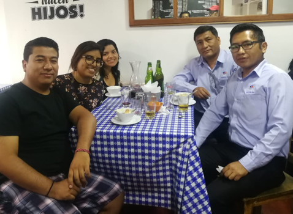
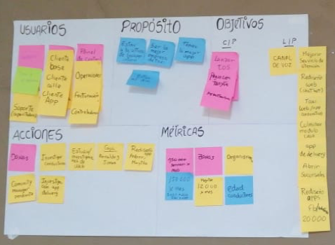

Rediseño app conductor, app pasajero y front de operadores; Taxitel (empresa arequipeña de taxis) busca para mejorar el posicionamiento de la empresa en la mente de sus conductores, operadores y clientes.
Problema
Las plataformas digitales de taxitel: app conductor, app pasajero y front de operadores presentaban problemas de diseño y usabilidad, lo cual no permitía a la empresa crecer más y expandirse.
Usuario
Contamos con 3 tipos de usuario: conductores, pasajeros y operadores.
Complicaciones
Entender el tipo de negocio, familiarizarse con la cultura arequipeña, hacer un balance entre conductor, operadora y pasajero.
1. En Arequipa los taxis funcionan solo bajo el respaldo de una empresa.
2. Los taxis deben tener siempre un casquete y stiker a los lados que identifiquen a qué empresa pertenecen.
3. La forma en la que los arequipeños suelen pedir taxi es por medio de llamadas telefónicas o en la calle identificando a la empresa que más le agrade, y en su mayoría quienes piden por app son personas jóvenes estudiantes o trabajadores.
4. Debido a su identidad, los arequipeños prefieren usar algo creado en su ciudad, es por ello que UBER a pesar de que funciona en esta ciudad no es considerada una de las principales competencias de Taxitel.
Pusimos en marcha nuestra primera reunión donde después de comer realizamos un Canvas que nos ayudaria a conocer la situación de negocio y sus planes a futuro.
 Establecimos un orden para comenzar, pues teníamos 3 tipos de usuario al cual entender.
BCM
Entrevistas
Benchmark
User persona
Journey Map
Priorización
Card Sorting
Prototipo
A pesar de mi background en diseño publicitario donde aprendí mucho sobre colores , contrates y formas en esta ocasión al hacer la presentación en otros dispositivos pude notar que se puedo trabajar un poco más ese aspecto.